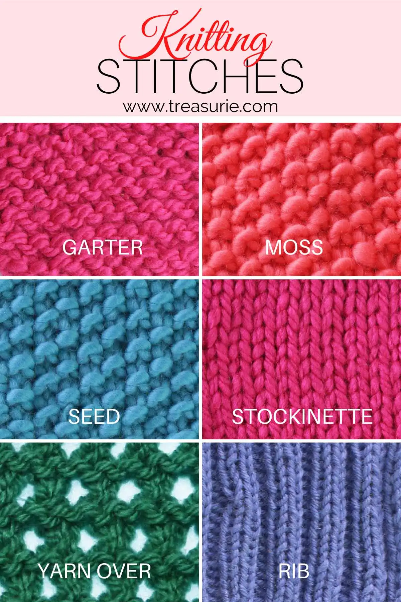

Introduction

Knitting is a w
There are numerous knitting stitches that you can learn and experiment with. Some popular ones include:

Knitting patterns provide step-by-step instructions for creating various items. Whether you want to make a scarf, a hat, or a sweater, there's a pattern for every project.
Materials: